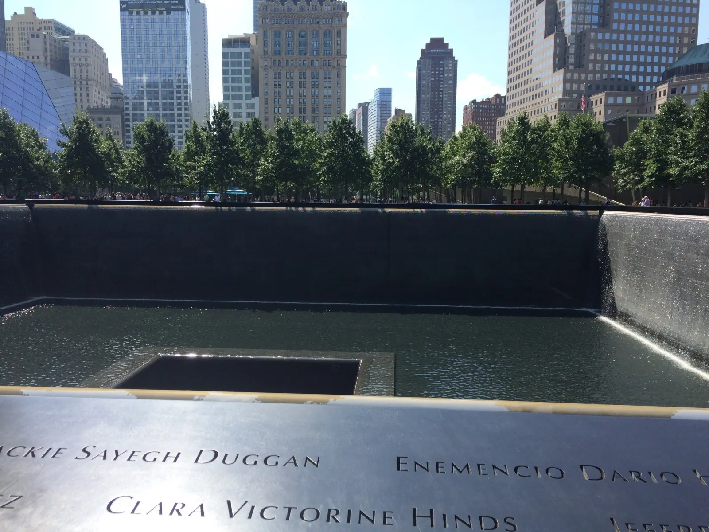
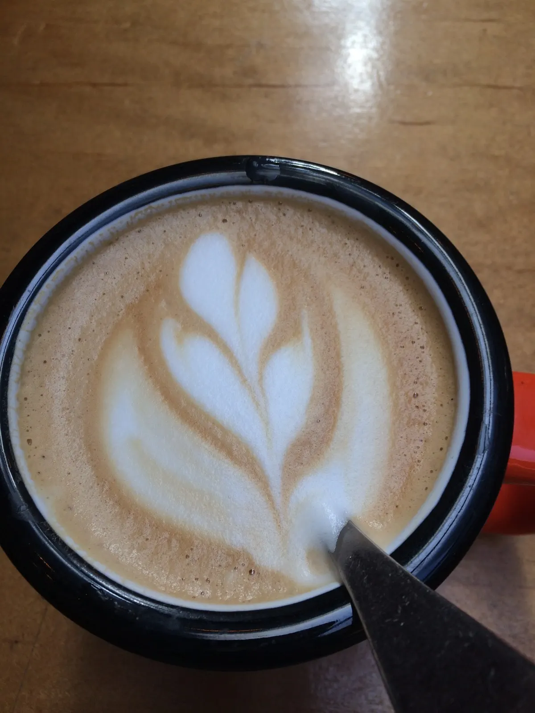
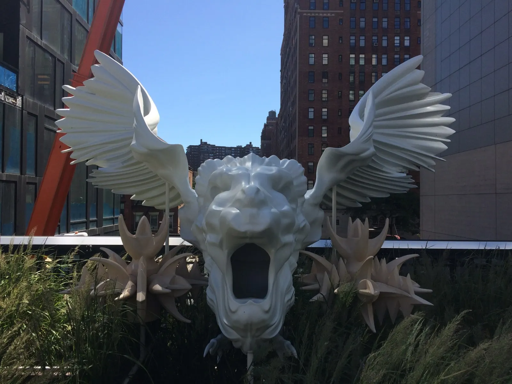
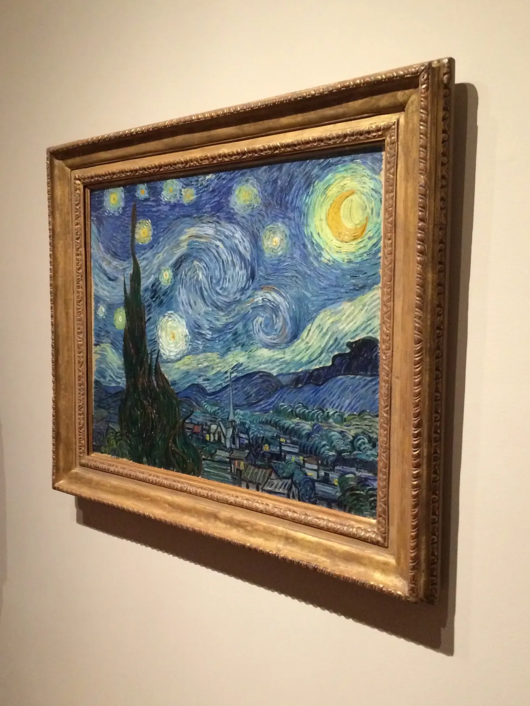
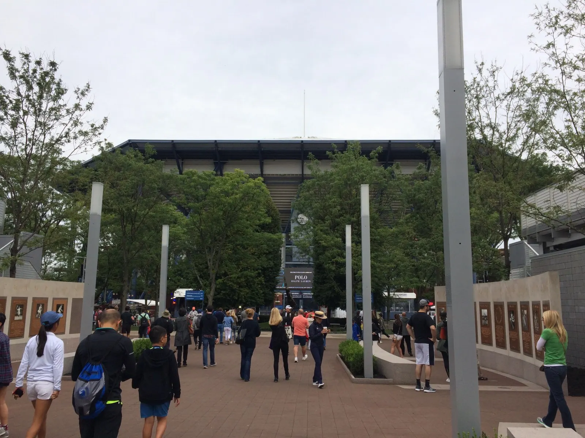
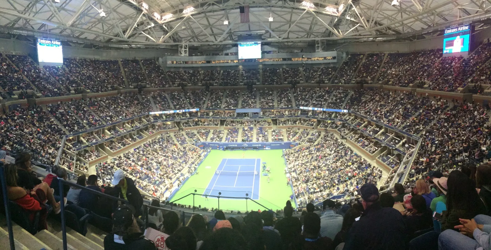
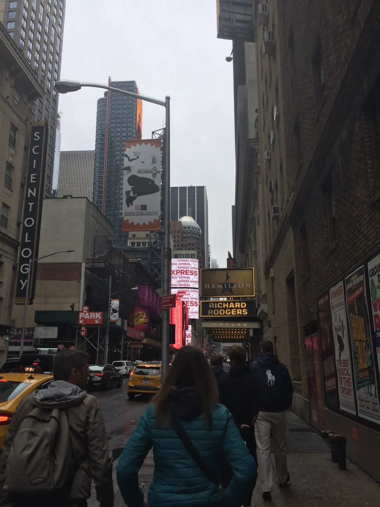

Thursday, August 31, 2017
Friends, a moment of solemnity, a ferry in the rain—amidst a hectic day
Before I start my European adventure, I make an intermediary stop in New York. I take a red eye into Newark and from there take an AirTrain to Penn Station in Manhattan. I was meeting my friend at NYU at 10:30, and since my flight was early I thought I would have plenty of time. After a couple blocks in the wrong direction, with a suitcase to drag around, a Starbucks and phone clutched in one hand and holding my sweater with my elbow because I was getting sweaty, suddenly 10 blocks seemed so far. At the rate I was walking, people probably would’ve thought I was a New Yorker.
My friend gave me a tour of the NYU campus, the famous fountain and Arch, and we walked through Chinatown and got smoothies. Then she had to go back, so I took the subway down to Battery Park (at least that was my intention—I had to get out after one stop so I wouldn’t end up across the Brooklyn Bridge) and visited the 9/11 memorial and museum.

I noticed that the names surrounding the large pools were carved all the way through the metal rather than just ridges into the metal. I thought sadly about how the names meant nothing to me but were the whole world to someone out there. In the museum I learned details regarding 9/11 that I didn’t know before. How the hijacked planes were originally headed for California. How the chosen hijackers were in U.S. flight school and weren’t discovered by security because small knives were allowed on board at the time. How only ~17,000 of the usual 50,000 were at work when the planes crashed at 8:45am because people came in late to vote in the mayor election or sleep in from a late basketball game the night before. And interesting random facts about the Twin Towers like how on windy days they would typically sway 12 inches side to side.
I left the museum feeling dejected and walked to Battery Park, where I went for a ride on the Staten Island Ferry. I didn’t realize the ferry ride was one way only and was literally 5 seconds too late to make the next boat back (watching the glass doors close in front of me), so was stuck on Staten Island for 20 min with 9% phone battery and no charger. The ride back was refreshing though—I made sure to be on the right side of the ferry this time so I could actually see the Statue of Liberty with her glowing torch.
Friday, September 1, 2017
The One Place in NYC Where People Take Their Time
Today consisted of another 10 miles of observation, stress, relaxation, and reflection. Took the train with Carina to Grand Central Station in the morning, and took pics of the fancy, elaborately constructed station before walking at a leisurely pace by the Empire State Building and toward Mud Coffee in East Village to have brunch with Grace, whom I met at my summer program. I took my time, thinking I had plenty of time, but once again found that I had underestimated how long it would take me to walk there, so had to catch a subway at Madison Square Garden so as not to be extremely late. While I was walking through the garden though, I noticed the neatly cut plants and flowers for the first time and caught a couple of squirrels munching on flowers, perched on top of the plant’s leaves:
I wonder if people even notice them in their haste to get places. We had a wonderful brunch catching up on our summers, and I had a delicious French croissant and latte.

My next place to explore was the High Line, a long narrow park built up on what used to be a rail line. I found this to be the one place where people actually stroll and take their time. I was even kept from going faster than I wanted to due to the narrow walkway. The park was nicely maintained, with great views of the streets that stretched to the horizon and occasional contemporary sculptures. I like walking around alone, I think because I am able to focus all my attention on my surroundings and am really able to enjoy being in my company and being in the present moment. Plus I get to decide where to go and how long to spend there.

Before lunch I walked around the Chelsea Market, an indoor flea market with booths selling fancy European cuisines. I walked into an Italian one and was amazed by how many different shapes and colors of pasta there were. Curious, I asked the cashier if all the pasta shapes were made of the same flour. He replied yes, except the white whole wheat one. I then asked if he was from Italy. He laughed and said no, he was from the Dominican Republic, very far away from Italy. As Dasha later confirmed, I clearly didn’t know what Italians looked like. I walked by a place selling halvah, a Middle Eastern cake-like but flourless dessert. I asked what it was and they offered me a sample. I said no, explaining I wasn’t going to buy anything. I wish I had tried it though. Carina later observed I must like talking to strangers. I think it’s just that I don’t mind it. I’m curious and want to learn something, and they’re probably bored anyways and wouldn’t mind some light conversation. While walking the High Line, I imagined myself as a happy carefree girl, walking around, having conversation with random workers on the street and brightening their days, and it made me happy thinking about if I could be that type of person.
I had one more encounter with a stranger in the MoMA (Museum of Modern Art) that afternoon. I was looking at a plate with a figure sketched onto it, when a man next to me pointed out the painting on the wall in front of us, where that same plate appeared in a small corner of the painting. For a split second I thought he was talking to someone else, but there was no one next to me and he was looking at me. I wondered why he bothered to inform me of this, but figured he was just a kind visitor, alone and open to conversation like me. He proceeded to ask if this was my first time, where I was from, am I going back to CA right after, oh where am I going then, what college am I going to? My guard automatically came up and I was reluctant to share info with a stranger, but I wasn’t sure how to avoid it. He told me he was from Queens, had I been there before? No, I said, but I am going to the US Open tomorrow. I was there last week! he said to my surprise. And from his back pocket he pulled out a US Open magazine, telling me about how he watched Nadal and Federer, and Federer was practicing in Central Park last week, did you hear? I told him I read it on the news. I’m a member at the MoMA, so just in case you ever come back, do let me know and you only need to pay $5 [tickets are $14], he told me. He took an old receipt out of his wallet, wrote Bruce and his email address on it, and handed it to me. I said thank you and took off for the next room. I’m still not sure why Bruce talked to me. Maybe I was alone and seemed open to talking, maybe he was talking to multiple people and looking to help others save ticket costs. I stayed in the museum for a good 3 hours, enjoying Frank Lloyd Wright’s architecture sketches and mile-high building models (the tallest building in Dubai is ½ mile high), squeezing in a pic of Van Gogh’s original The Starry Night (squeezing to get this pic because a small crowd was crowded in front of it, also in front of two very stressed looking security guards. Which explains why the painting is at an angle).

When I walk by myself, I especially tend to make detours when something looks curious or interesting. I made sure to head out early this time and made a detour to the Rockefeller Center.
Then an NBC Studios sign caught my eye and I went inside the Comcast skyscraper and followed the signs for the Rainbow Room where they film Good Morning America live. The room wasn’t open to the public, but an employee walked out of the room and I managed to catch a glimpse of the backdrop you would see on TV.
Walking down Fifth Street, which was jammed with people (I immediately was aware that it was Friday night), I had time to look around me and take it all in. The blaring horns of cars, the exhaust puffing out of bus pipes. The hundreds of faces that swept by me—faces with black, brown, blond, highlighted hair. The strong waft of pretzels and Thai stir fry as I walked past food carts. Designer stores, a packed Microsoft store, a Smartwater ad of Jennifer Aniston smiling on a bus stop billboard, grim straight faces, a Victoria’s Secret with glass golden-framed doors, grand white churches reflecting the setting sun. The crowds prevented me from walking my usual pace—I didn’t want to imagine what Times Square was like now.
Headed back to Grand Central, got back on the Metro, and had a wonderful dinner with Carina and her mom at a Chinese restaurant. The cook showed us different live fish so we could choose what size fish we wanted, and minutes later the one we had picked out arrived on our plates. Now I wish he hadn’t shown it to us alive, Carina said in regret.
Saturday, September 2, 2017
Day at the US Open
I woke up to the sunlight streaming in through the window and the cold morning that made me want to curl into an even tighter ball. At 8:30 we were in the car and on our way to Flushing Meadows to see what I had come to NY for—the US Open! We drove on a 2-lane parkway lined with forests—much more enjoyable than the 10-lane blocked freeways at home—and passed security to get to the grounds. We noticed there were quite a lot of policemen. We drove over a sensor that scanned our car, and noticed there were barricades along the road, possibly to prevent vehicles from driving into the sidewalk (given the Barcelona attack and other recent attacks by vehicle).
There were less people than I expected in the morning but it would turn into crowds by afternoon. This was my first time at the US Open, so I got to compare it to Indian Wells in Palm Springs, which I went to every year in high school and probably middle school (you could say Indian Wells was my favorite day of the year). It was cool seeing the actual grounds that I had only seen on TV previously—the globe, the fountains, the stadiums. And the tennis! So much tennis!! Watching tennis is one of my favorite things to do in the whole wide world.

We started at the practice courts. We watched Venus Williams practice taking returns early, swing volleys, and coming in during points. We saw Nadal spend all day ripping forehands. We watched a 19-year-old practice, and all I could think about was how crisp, simple, and solid her strokes were. Carina and I also took pics posing with really big rackets.
We saw quite a few matches. I had 10 seconds of fame during the Dolgopolov vs. Troicki match in Grandstand stadium. The guy in front of me was waving his arms, and moments later he appeared on the stadium screen, and I was in the corner of that giant screen! We saw Del Potro, or tried to—the stadium was so packed that we couldn’t get a seat—as well as legends like John McEnroe and Michael Chang. I found it interesting how old names like Del Potro were so popular, while younger, higher ranked players, even ones who just won the French Open, barely drew any crowds.
I really wanted to see Hingis—I love her doubles game and positive energy and smiles—so saw a few points of her mixed doubles match before it got rained out and everyone migrated over to the Arthur Ashe Stadium to watch Nadal. The packed Arthur Ashe stadium was so cool with the roof, 3 giant screens, the “flying” camera, the roaring echo of cheering after Nadal hit a winner.

It was such an energizing, exciting atmosphere to be in. I would’ve enjoyed it more if I wasn’t so tired after a long day of watching tennis. It was the chilliest day I’ve ever watched tennis in (though not chilly enough to skip the ice cream), but the good news is I didn’t need a hat or sunscreen, which was great because I didn’t bring either on this trip.
Sunday, September 3, 2017
A Whole New World (for reals though)
Carina, Dasha, and I had brunch at Junior’s in the Broadway District—I ate myself full with cheese blitzes (ricotta filled pastries) and a piece of Carina’s potato pancake—before making our way (slowly, as it was rainy and very crowded on the streets) to the New Amsterdam theatre to watch Aladdin, my first Broadway show!

We were so close to the stage that we could see the sweat glistening on the actors’ faces—it was quite a different experience, being able to see the rainbow glitter covering the Genie’s bald head, the elaborate makeup, the sparkling (and blinding) jewels on Princess Jasmine’s dress. It was a really spectacular show—the music was great, the script funnier than I expected, with a modern twist. For example, when the street gangs were talking about singing and dancing in the marketplace instead of stealing money, one immediately dismissed the idea as ridiculous: “Who would pay money to watch people sing and dance?” Iago and the Genie were especially hilarious. The famous “Whole New World” scene had really cool special effects—Jasmine and Aladdin singing a beautiful song sitting on a carpet appearing to be flying, with glittering and flashing stars in a dark sky behind them and swaying silk beneath them.
After the show Carina took me outside to the back of the theatre building to get the actors’ signatures. Apparently the actors come out and sign your bulletins and take pictures with you! As Telly (Aladdin) signed my bulletin, I commented on how tiring and how much exercise it must be to do all that singing and dancing, and he agreed. I asked Courtney Reed (Jasmine) how she deals with all the kissing she has to do on stage. “You mean kissing someone who’s not my boyfriend?” she clarified with a laugh. I asked Major (the Genie) what it feels like to have glitter all over his head. Just like sandpaper, he said.
I met up with my friend for the rest of the afternoon. We continued walking up north, past Times Square, which was crazy as usual, and through Central Park, which was green and tranquil in contrast. We had dinner in Koreatown and I tried cold ramen for the first time. The noodles were so slippery and long that it was really hard to eat and took more effort than I was used to. I took so long that the table beside us went through two rounds of customers, and finally they gave us the check. We cracked up so hard. Eating, talking, walking, and laughing—that’s all you need for a wonderful evening.
Tuesday, September 5, 2017
The stress associated with last minute preparations for Europe
I spent my last day in NYC planning last minute logistics for my Europe itinerary. I waited until today to book a couple flights and trains. Only a couple days prior I booked my Rome to London flight, and became overwhelmed just thinking about all the routes I needed to plan. Also reserved tickets for a couple popular attractions in Venice and Florence and worked on the itinerary for Venice. It’s so weird not being in school right now (today is the first day of classes at Wellesley). At 7pm I said goodbye to Carina and her mom and thanked them for their generous hospitality, and was soon on the Metro to Grand Central, where I then took the subway to JFK Airport. I was sad to leave New York—I had had so much fun there. Thoughts ran through my head about how short life was, how far away everyone is geographically, how hard it is to stay in touch with people when you rarely see them face to face. I was also feeling a little nervous — to have to travel by myself at times, in foreign countries with foreign languages. There are so many things that can go wrong. But people have assured me I’ll be fine, as long as I am always on the alert. I am so thankful to have this opportunity to travel and see the world, and hopefully it will be the unique experience of a lifetime.